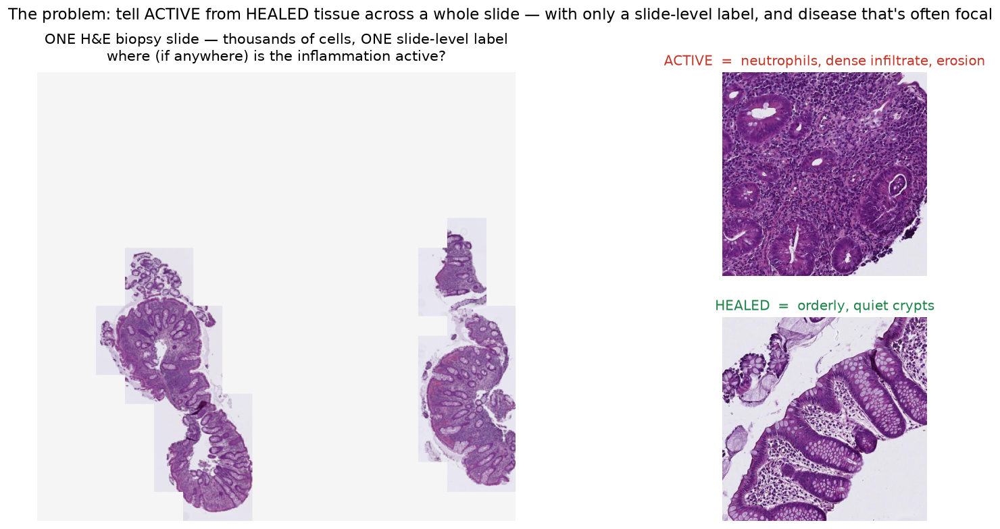

The problem: map active inflammation on a colon biopsy

One H&E biopsy slide (left) and the two looks we must tell apart at the cell level (right).
In inflammatory bowel disease, pathologists read each biopsy as active
(neutrophils attacking the gut lining) vs healed. It guides treatment — but it's manual and subjective.
The hard part: one slide holds thousands of cells, disease is often a small focus in
otherwise-normal tissue, and the only training labels we have are per-slide, not per-region.
Goal: an automatic, per-region inflamed-vs-healed heatmap — plus an honest accuracy number.
The Approach
Stand on a frozen “foundation model”, train only a tiny head
A foundation model is a large AI pre-trained on a huge pile of pathology images; it already
“understands” tissue. We use it frozen — pure look-up, no expensive training.
On top we train a tiny head that does two things at once: call the slide
active/healed, and spotlight the tiles that drove that call → the heatmap.
It learns from slide-level labels only (no one marks individual tiles), and we score it
leave-patients-out — a patient's slides never sit on both sides of the test, so the number is honest.
Result 1 · The signal is real
It separates active from healed — AUROC 0.98, no leakage
140 slides: the two classes form separate clouds (left), predictions pile at 0 and 1 (middle), ROC AUROC 0.984 (right).
AUROC 0.98 across all 140 slides (1.0 = perfect, 0.5 = coin-flip) — held-out, grouped by patient.
Sanity check: shuffle the labels and it collapses to 0.52 → the model is reading real biology, not a hidden shortcut.
Result 2 · The deliverable
A per-tile inflamed-vs-healed map — from slide labels alone
Colour = how hard the model looked at each tile. Active slide (left) → one red hot-spot; healed slide (right) → none.
The model was never told which tiles are diseased — only the slide's overall label. Yet it learns
to put a bright spotlight on the inflamed region and stay cool on a healed slide.
That spotlight is the deliverable: a map a clinician can check — “the call came from here.”
Honest limits & what's next
Disease is a spectrum — and the focal end is still hard
Coloured by how inflamed each tile looks: focal (rare, hard) → patchy → diffuse (common, easy) → calm.
Most active slides are broadly inflamed and easy. The rare focal cases — one tiny
inflamed spot — are still missed. We report this honestly rather than hide it.
Next: finalize the validation, then add cell-level neutrophil detection and formal severity scores
(Geboes / Nancy / Robarts) — each a new head on the same frozen embeddings.
One-line summary: a frozen pathology AI + a tiny trained head turns a whole biopsy into an
honest, checkable inflamed-vs-healed map — built on public data, on a laptop.
Data: IBDColEpi (CC0) — Pettersen et al. 2021, doi:10.18710/TLA01U ·
Model: H-optimus-0 (Bioptimus, Apache-2.0) · Method: attention-MIL (Ilse et al. 2018) ·
full citations in REFERENCES.md.